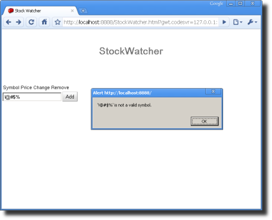

Except as otherwise noted,
the content of this page is licensed under the Creative Commons
Attribution 3.0 License.
Google Code offered in: English - Español - 日本語 - 한국어 - Português - Pусский - 中文(简体) - 中文(繁體)
At this point, you've created all the elements of the interface. Like many user interface frameworks, GWT is event-based. This means that the code executes in response to some event occurring. Most often, that event is triggered by the user, who uses the mouse or keyboard to interact with the application interface.
In this section, you'll wire up your widgets to listen for and handle mouse and keyboard events.
Let's review the StockWatcher requirements to see what events occur.
| Task | UI Event (Trigger mechanism) | Response |
|---|---|---|
| User enters a stock code. | Clicks the Add button or presses return in the input box. |
|
| User deletes stock from the table. | Presses the Remove button. |
|
GWT provides a number of different event handler interfaces. To handle click events on the Add and Remove buttons, you'll use the ClickHandler interface. To handle keyboard events in the input box, you'll use the KeyPressHandler interface.
Starting with GWT 1.6, the ClickHandler, KeyDownHandler, KeyPressHandler, and KeyUpHandler interfaces have replaced the now deprecated ClickListener and KeyBoardListener interfaces.
Events in GWT use the event handler interface model similar to other user interface frameworks. To subscribe to an event, you pass a particular event handler interface to the appropriate widget. An event handler interface defines one or more methods that the widget then calls to announce (publish) an event.
One way StockWatcher users can enter a stock code is by using their mouse to click on the Add button.
You'll handle the Add button's click event by passing it an object that implements the ClickHandler interface. In this case, you'll use an anonymous inner class to implement ClickHandler. The ClickHandler interface has one method, onClick, which fires when the user clicks on the widget.
When the user clicks on the Add button, StockWatcher should respond by adding the stock to the stock table. So, to handle the click event, call the addStock method. You haven't written the addStock method yet; you'll create a stub and then code it in the next section.
Create method addStock() in type 'StockWatcher'. Or copy and paste from the code highlighted below.package com.google.gwt.sample.stockwatcher.client; import com.google.gwt.core.client.EntryPoint; import com.google.gwt.event.dom.client.ClickEvent; import com.google.gwt.event.dom.client.ClickHandler; import com.google.gwt.user.client.ui.Button; import com.google.gwt.user.client.ui.FlexTable; import com.google.gwt.user.client.ui.HorizontalPanel; import com.google.gwt.user.client.ui.Label; import com.google.gwt.user.client.ui.RootPanel; import com.google.gwt.user.client.ui.TextBox; import com.google.gwt.user.client.ui.VerticalPanel; public class StockWatcher implements EntryPoint { private VerticalPanel mainPanel = new VerticalPanel(); private FlexTable stocksFlexTable = new FlexTable(); private HorizontalPanel addPanel = new HorizontalPanel(); private TextBox newSymbolTextBox = new TextBox(); private Button addStockButton = new Button("Add"); private Label lastUpdatedLabel = new Label(); /** * Entry point method. */ public void onModuleLoad() { // Create table for stock data. stocksFlexTable.setText(0, 0, "Symbol"); stocksFlexTable.setText(0, 1, "Price"); stocksFlexTable.setText(0, 2, "Change"); stocksFlexTable.setText(0, 3, "Remove"); // Assemble Add Stock panel. addPanel.add(newSymbolTextBox); addPanel.add(addStockButton); // Assemble Main panel. mainPanel.add(stocksFlexTable); mainPanel.add(addPanel); mainPanel.add(lastUpdatedLabel); // Associate the Main panel with the HTML host page. RootPanel.get("stockList").add(mainPanel); // Move cursor focus to the input box. newSymbolTextBox.setFocus(true); // Listen for mouse events on the Add button. addStockButton.addClickHandler(new ClickHandler() { public void onClick(ClickEvent event) { addStock(); } }); } /** * Add stock to FlexTable. Executed when the user clicks the addStockButton or * presses enter in the newSymbolTextBox. */ private void addStock() { // TODO Auto-generated method stub } }
Implementation Note: For smaller applications, such as StockWatcher, that handle relatively few events, using anonymous inner classes gets the job done with minimal coding. However, if you have large number of event handlers subscribing to events, this approach can be inefficient because it could result in the creation of many separate event handler objects. In that case, it's better to have a class implement the event handler interface and handle events coming from multiple event publishers. You can distinguish the source of the event by calling its getSource() method. This makes better use of memory but requires slightly more code. For a code example, see the Developer's Guide, Event Handlers.
In addition to using the Add button, StockWatcher users can enter a stock code without taking their hands from the keyboard by pressing return in the input box.
To subscribe to keyboard events, you can call the addKeyPressHandler(KeyPressHandler) method and pass it a KeyPressHandler.
// Listen for mouse events on the Add button.
addStockButton.addClickHandler(new ClickHandler() {
public void onClick(ClickEvent event) {
addStock();
}
});
// Listen for keyboard events in the input box.
newSymbolTextBox.addKeyPressHandler(new KeyPressHandler() {
public void onKeyPress(KeyPressEvent event) {
if (event.getCharCode() == KeyCodes.KEY_ENTER) {
addStock();
}
}
});
}
/**
* Add stock to FlexTable. Executed when the user clicks the addStockButton or
* presses enter in the newSymbolTextBox.
*/
private void addStock() {
// TODO Auto-generated method stub
}
}import com.google.gwt.event.dom.client.KeyCodes;
import com.google.gwt.event.dom.client.KeyPressEvent;
import com.google.gwt.event.dom.client.KeyPressHandler;The event handlers are now wired up and ready for an event. Your next step is to fill out the stub addStock method.
At this point, StockWatcher should be listening for user input, a mouse or keyboard event that signals the user has entered a stock code. So next you'll test whether or not the event handler interfaces are working by coding the response that StockWatcher should make when it detects an event: add the stock. StockWatcher responds on the client side without sending any requests back to server or reloading the HTML page.
In StockWatcher, users will enter the stock codes of the stocks they want to monitor one at a time into the input box. When they press Enter or click on the Add button, you want StockWatcher to respond as follows:
In this section, you'll code the first response, validating the input, just to see if the event handler interfaces are working. In the next section, Coding Functionality on the Client, you'll code the rest of the steps to add the stock.
You'll implement this functionality in the addStock method.
You want verify that the stock code entered is valid. Rather than verify whether the user input matches an actual stock code, for the purposes of this tutorial, you'll just perform a simple character validity check.
First, extract the stock code. To retrieve the text in the TextBox widget use its getText method.
Next, ensure that the charcters are not within the set of illegal characters you specify. After you've converted the user input to a standard form, use a regular expression to check its format. Remember to use regular expressions that have the same meaning in both Java and JavaScript.
If the input is valid, clear the text box so the user can add another stock code.
Finally, if the input is not valid, warn users via a dialog box.
private void addStock() {
final String symbol = newSymbolTextBox.getText().toUpperCase().trim();
newSymbolTextBox.setFocus(true);
// Stock code must be between 1 and 10 chars that are numbers, letters, or dots.
if (!symbol.matches("^[0-9A-Z\\.]{1,10}$")) {
Window.alert("'" + symbol + "' is not a valid symbol.");
newSymbolTextBox.selectAll();
return;
}
newSymbolTextBox.setText("");
// TODO Don't add the stock if it's already in the table.
// TODO Add the stock to the table.
// TODO Add a button to remove this stock from the table.
// TODO Get the stock price.
}import com.google.gwt.user.client.Window;At this point you should be able to enter text in the input box. If you use an illegal character, a dialog box should pop up and display a warning. Try it and see.

Tip: Changes made to your Java code are immediately shown in the browser after pressing refresh. If development mode is already running, you don't need to restart it. Just click the Refresh button in your browser to reload your updated GWT code.
Although you have not compiled StockWatcher yet, you can test it in production mode here: Run StockWatcher
At this point you've implemented event handler interfaces for mouse and keyboard events that signal the user has entered a stock. Stockwatcher responds by validating the input.
Now you're ready to implement the code on the client that adds the stock to the table and provide a button to remove it. You will also display the stock prices and display data and a timestamp showing when the data was last updated.